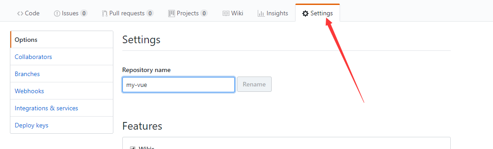
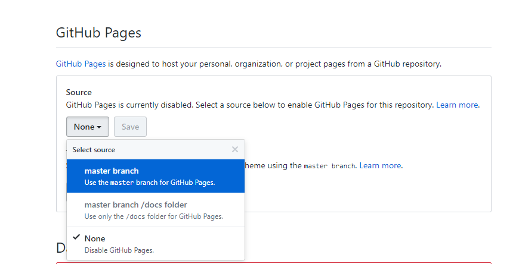
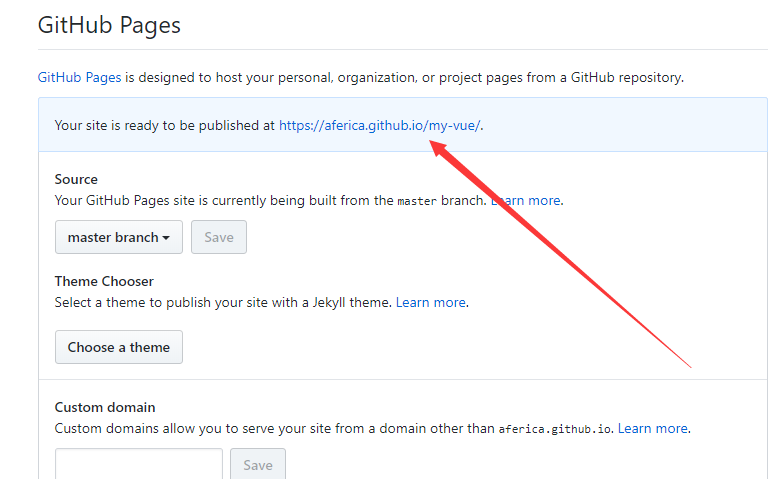

sequenceDiagram participant browser participant app.js participant route.js participant controller.js participant mongodb browser->>app.js: HTTP请求 app.js->>route.js: 转发路由 route.js->>controller.js: 执行方法 controller.js->>mongodb: 操作数据库 mongodb-->>controller.js: 返回增删查改操作结果 controller.js-->>browser: 返回JSON结果

登录到Github上，进入所在仓库，点击Setting选项

找到Github Pages 的设置，点击 source 中的本来的 None ，使其变成 master 分支，然后点击 save

页面刷新之后，再看 github pages 设置框处，多了一行网址，拼接html文件地址即可访问
reveal.js comes with a few themes built in:
Black (default) -
White -
League -
Sky -
Beige -
Simple
Serif -
Blood -
Night -
Moon -
Solarized
1. 整体配色：
https://colorhunt.co/
2. RGB颜色值转换成十六进制颜色码：
http://www.sioe.cn/yingyong/yanse-rgb-16/
1. 正则表达式：
https://regex101.com/library
2. 工具合集：
站长工具
在线工具
3. markdown画UML图：
mermaid